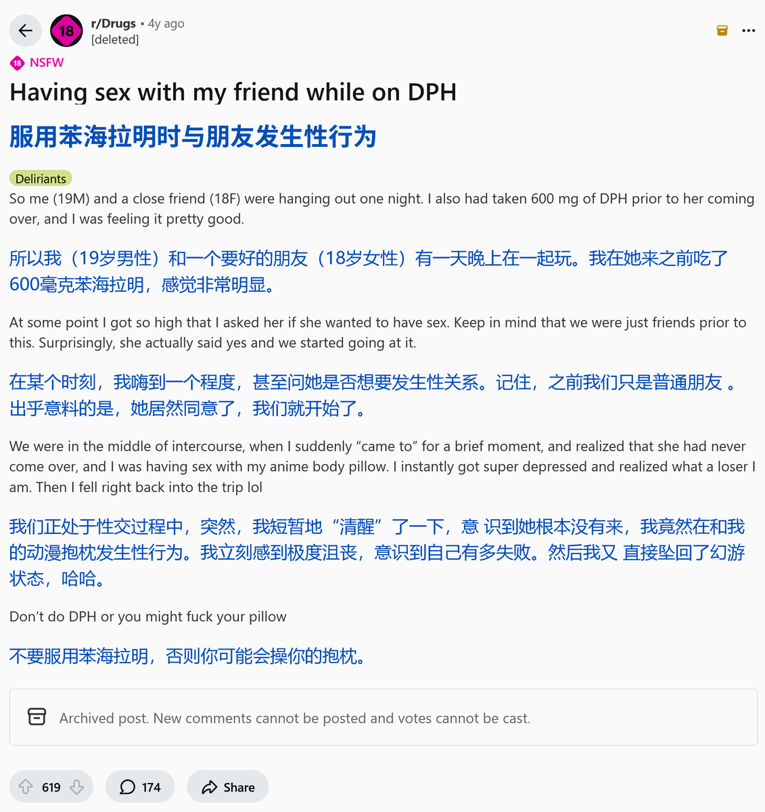
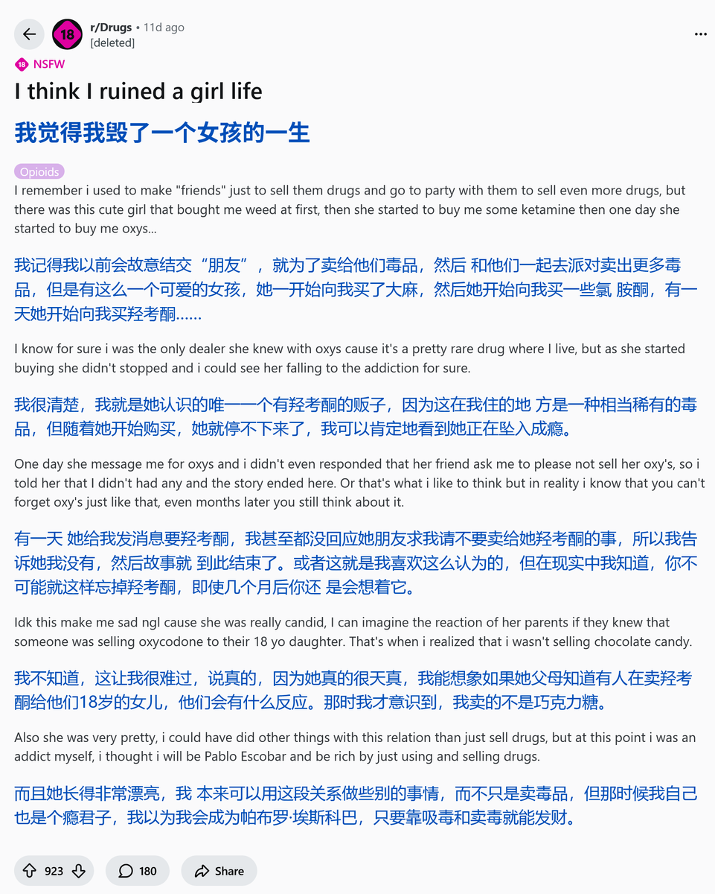

药物报告连载day13——欧亨利式结局🤣
一天晚上，贴主服用了600mg苯海拉明后，与一名异性朋友一起玩，然后发生了如下的一幕。你猜到了吗？
所以啊，大家不要吃谵妄剂。那些幻觉只是欺骗自己的东西，更糟糕的是自己失去了辨别它们的能力，不仅没有意思，在某些情况下更可能是危险的🥺❤️

一天晚上，贴主服用了600mg苯海拉明后，与一名异性朋友一起玩，然后发生了如下的一幕。你猜到了吗？
所以啊，大家不要吃谵妄剂。那些幻觉只是欺骗自己的东西，更糟糕的是自己失去了辨别它们的能力，不仅没有意思，在某些情况下更可能是危险的🥺❤️


药物报告连载day12——“我觉得我毁了一个女孩的一生”
贴主贩卖各种药物，目睹了一个女孩找他买羟考酮，然后逐渐坠入成瘾的整个过程。
大家可以对比一下，这里的贴主知道自己卖的东西对别人造成了什么后果，但推上那些卖药的知道自己卖的是什么东西嘛？多长点良心罢🥺 https://t.co/KRiDaG4mWa https://t.co/BcdDA93m9O
贴主贩卖各种药物，目睹了一个女孩找他买羟考酮，然后逐渐坠入成瘾的整个过程。
大家可以对比一下，这里的贴主知道自己卖的东西对别人造成了什么后果，但推上那些卖药的知道自己卖的是什么东西嘛？多长点良心罢🥺 https://t.co/KRiDaG4mWa https://t.co/BcdDA93m9O